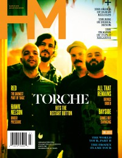

HM
Mar 2015, #188
| Cover |
|---|
|  |
 Online Exclusively Online Exclusively |
| Writers in this Issue |
| Matt Francis Jordan Gonzales Garrett Hollowell Nathan Key Justin Mabee Ben Rickaby Sarah Dos Santos Collin Simula David Stagg |
Torche
Cover Feature:- "Hitting the Restart Button" by Collin Simula
- "New World Order" by Ben Rickaby
- "A Conversation With Bayside Vocalist Anthony Raneri" by Collin Simula
- "Red Returns" by Jordan Gonzales
- "I don't think of all the misery but the beauty that still remains" by David Stagg
- "Back Again For The First Time" by Sarah Dos Santos
- Derek Minor - Empire by Justin Mabee
- Least of These (TX) - Mere Image by Nathan Key
- Hawk Nelson - Diamonds by Ben Rickaby
- The Lonely Revolts - Broken Bones Burning Hearts by Garrett Hollowell
- The Protest - Great Lengths by Ben Rickaby
- Judgement X Day - The Altar by Garrett Hollowell
- Concepts - Transitions by Ben Rickaby
- My Ransomed Soul - Trilateral by David Stagg
- Hotel Books - Run Wild, Young Beauty by Sarah Dos Santos
- The Woodsman's Babe - The Woodsman's Babe by Sarah Dos Santos
- "The Frozen Flame Tour"
- "The World Tour Part II"Sleeping with Sirens, Pierce the Veil, Pvris , and Mallory Knox
- "Staring at White Lines on the Side of the Road" by Matt FrancisMatt recounts stories of playing shows on the road
Relevant Links
Official web site of HMOnline back issue publication
Browsable issues from 2010-2015
This issue is available exclusively online.
You may be able to find HM in a library near you: Worldcat
© 2011 CMnexus. Last updated August 2025. Contact: editor -AT- cmnexus -DØT- org